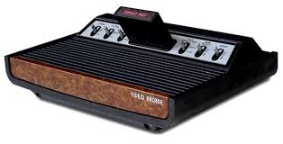

Breve Historia de los videojuegos
En 1969 nació el microprocesador, que en un reducido espacio producía mayor potencial de información que los grandes ordenadores de los años 50. Es lo que constituye el corazón de nuestros ordenadores, videojuegos y calculadoras.
En 1970 aparece el disco flexible y en 1972 se desarrolla el primer juego, llamado PONG, que consistía en una rudimentaria partida de tenis o ping-pong. En 1977, la firma Atari lanzó al mercado el primer sistema de videojuegos en cartucho (Atari VCS/2600), que alcanzó un gran éxito en Estados Unidos y provocó, al mismo tiempo, una primera preocupación sobre los posibles efectos de los videojuegos en la conducta de los niños.

Tras una rápida evolución, en la que el constante aumento de la potencia de los microprocesadores y de la memoria permitieron nuevas mejoras, en 1985, la casa Nintendo lanzó su primer sistema de videojuegos (Nintendo NES /FamiCom) que permitió la presentación de unos juegos impensables nueve años atrás. La calidad del movimiento, el color y el sonido, así como la imaginación de los creadores de juegos fueron tales que, unidos al considerable abaratamiento relativo de dichos VJ, a comienzos de los 90, en nuestro país se extendieron de manera masiva los juegos creados por las dos principales compañías, Sega y Nintendo, pasando en poco tiempo a constituirse en uno de los juguetes preferidos de los niños.